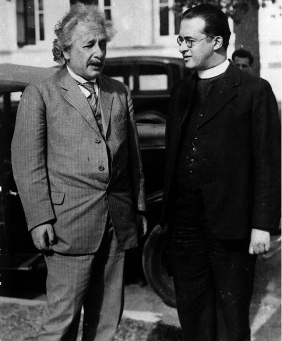

科學
科學
 聖經
聖經
起初，神創造天地
宇宙大爆炸或大霹靂(Big Bang) 是描述宇宙起源與變化的宇宙學模型，這個模型得到了當今科學研究和觀測最廣泛的支持，一如NASA示意圖。圖中表示了宇宙的時間與空間，有一個起始點，一直隨著時間膨脹到現今的宇宙，而不同的星系也逐漸形成。這世界真有一個開始！聖經一開始不正是這麼寫道：「起初，神創造天地。」(聖經 創世記1:1)他鋪張穹蒼如幔子
宇宙膨脹的觀念，直到二十世紀才發現。殊不知聖經在主前700年，就有十處五位不同作者，提到了上帝鋪張穹倉(stretched the heavens)。「他鋪張穹蒼如幔子，展開諸天如可住的帳棚。」(聖經 以賽亞書40:22)聖經不是科學的書，這是於三千五百年前上帝透過摩西傳達給以色列人知悉地球創造及人類由來。宇宙大爆炸理論與聖經記載世界的開始似乎看起來不謀而合，然而對於執著於聖經創世記文字詮釋的人而言，其主張地球只有六千多年[2]；但大衛鮑森牧師及聖經學者等卻有不同的看法。
創世記「日 yom」
科學界為過世的
勒梅特翻案

愛因斯坦也認錯 
科學貴在於不斷發現及修正錯誤，探討真相與原理。然而，科學家也是人，會發現現象背後的原理，也會犯錯。牛頓曾說過：「萬有引力定律解釋了星球間的運動，但無法解釋—誰使星球間如此運動？」科學可以解釋自然界現象，對於無法解釋意義及為什麼。至今，我們仍無法回答關於宇宙大爆炸的其他問題：